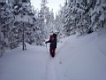
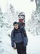
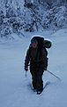
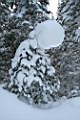
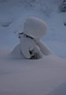
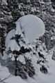
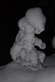
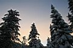
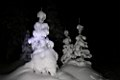
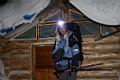

НОВОГОДНЯЯ СКАЗОЧКА
2007-2008
или Mamai: New Year Riding. Part I : Заход
Неисповедимы пути господни. (c)
Вот так всегда и получается:
собиралась ехать на НГ в Байкальск,
но не смогла сопротивлятся выпавшему
снегу, и вот я на Мамае.
Выезжающие из Иркутска утром 30-го декабря все были откуда-то: кто с днюхи, кто после покупки четырехколесного друга, кто с корпоративки. Короче - тотальный недосып + все "прелести" гулянок :))) Ну и как полагается выехали почти на час позже запланированного.
За рулем очаровательная блондинка Светик-семицветик, на заднем сиденье пытается спать Вовкин :))) В машину рюкзаки и 4 доски на троих, тапку в пол и поехали. 100-120 км/ч (честно, я отчего-то пару раз глубоко вжалась в сиденье, даже с Чурилкиным, мне не было страшно катать на скорости) , и менее чем через 2 часа - мы в Слюдянке :) Ура!
Забираем Леху, впихиваем еще вещи и до "Полины", обЭд. Машина. Звоню Союзнику - они выехали на экспрессе и были там на 2 часа раньше нас:
- Что там?
- А снега дох**! Наверху еще сыплет! Гор не видно.
- А вы где?
- Выехали из Выдрино только.
- Лан, через час будем, тропить не поднимая глаз вам :)))
Странно... Как там может быть снег, если в Утулике такое солнце
стоит? Тапка снова достает пола, и мы на трассе у сворота на Мамай.
Вытолкали наши шмотки. Света с Лехой погнали машину в Выдрино. А
мы пошли туда - в сказочное снежное новогоднее ущелье :)))
Первое, что порадовало - ТРОПА ! Она была! Но как-то ее слишком много для прошедших всего 2 челов. Лан, рюкзак запаковать, палочки достать, борд наверх. А зря. На мне он (или она, я так и не решила еще) проехал только плоскотину, дальше сил не было тащить на себе, поплелся за мной на веревочке нагребая сугробы :) Созаходчику Вовке досталась в нагрузку бутылка шампанского (и не зря :), 3 л вина для глинта и банка консервов - не в моих силах и это все затащить, хоть полдороги в голове крутилась коварная мысль - а не переложить ли ему еще и фруктиков кг 2-3?
По плоскотине две мысли:
1. зачем? зачем снова это все?
2. и где это долбанный подъем, где? >:-}
 
Уговариваю себя тем, что вот за этим поворотом, ан нет, черт!!!! Ну за следующим точно, йопть, да сколько можно-то? Тропа не подмерзла, фигово. На улице где-то около -10 всего.
Дошли до начала подъема. Сильно охлажденная банка
Adrenalin Rush улетела на раз-два :))) Дальше- дальше шли долго, 5 часов,
по пути - разбросанные вещи: доски, спальники, рюкзаки (как потом оказалось
это все читинцы, которые тропили почти 10 часов до нас). Бортик
тропы все поднимается и поднимается и после болота уже почти по самое
нехочу. навстречу Иван и сотоварищ - говорят не дотропили до кунга 100
метров: по шею в снег уходишь. а они на 1 денек забегали, думали откатать
на домой на НГ. Пожелал удачи :))) лан, и тебе того ж :)))
Перед лавинным меня догоняет турбозаяц Андрей, вернее, сначала виден только куль с привязанным бордом, кусками фанеры и прочими прелестями для ремонта выбитых стекол кунга, а потом взгляд переключается на того, кто все это тащит - Андрюха! :)))
На лавинном догоняем Союзника с Жекой - оказывается не одной мне так
медленно -хреново- идется :))) Сумерки. Короток световой день в декабре!
Дошли до пигвиновской палатки, значит сворот на Лехину зимуху где-то
близко.
И тут мы как жареные тараканы петляем по лесу. Туда? Нет не туда! Ниже
палатки, нет выше палатки! Короче чуть не потерялись в 3 соснах. Хочется
пить. Я тут предлагаю открыть бутылку шампанского, которого у нах
просто -дохрена- очень много. Лан, ждем Леху и откручиваем пробку.
А фиг вам! Оно замерзло! Его и трясли и крутили вертели - пробка примезла
намертво! Жека не выдержала, пошла сама искать зимуху. 10 мин ее нет
- Yahoooooooooo! Сюда, нашлась (промазали метров 20). Все, тропим до
зимухи, греться. чай, вода , кули. спальники, штопор! И! Шампанское
все же открыто! :))))
Дальше по накатанной - пельмешки без спешки, дец для сугрева, хотя как
оказалось - уничтожили все запасы конъяка, вот и дец :))) Всем по спальникам
и спать, в зимухе тепло, хорошо пахнет деревом, пока еще :)))
Leen
Фото: Вова и Лена
|
Когда-то давным давно, кажется в сентябре, когда
кто-то чего-то строил на Мамае, уже тогда родилась мысль отметить
Новый Год на Мамае с женами и детьми, и с теми кто помогал чего-то
строить... Но люди меняются, и планы людей меняются, а Новый Год
остается. И Мамай остается таким же как и был, точнее почти таким
же, ведь кто-то же чего-то там построил :) Так чем же это не повод
продолжать жить и радоваться жизни, а?!
Главное - собрать компанию и собрать рюкзаки!
Сбор компании начался еще в середине декабря и продолжался до
самого последнего. Количество теплых мест в зимухе было слегка
ограничено, количество холодных мест вокруг - сколько угодно,
но в итоге тепла хватило всем зашедшим участникам стройки года,
а также всем приглашенным (заранее и по ходу дела) гостям. Оглашу
список прибывших:
Саня (Союзник) и Женя - приехали утром 30-го на экспрессе..
Я, Света, Вова (XV) и Лена (Leen) - заезжали на машине 30-го днем..
Ульяна, Антон и Ксюша - на электричках 30-го вечером и 31-утром...
Остальные наши люди хотели подойти уже в новом году :)
Теперь за рюкзаки - я, например, начал собирать
его за неделю, и даже кое-чего заранее заносил, сноуборд и колонки
для музыки, например :) Столько стеклотары в рюкзаке я еще ни
разу не таскал! Ну а как же без нее, 5 бутылок шампанского в пластик
не перельешь, так что раз в год можно :) Еще много было того,
чего нам не грех для такого праздника затрамбовывать в тяжеленные
рюкзакаи, но об этом будет сказано далее...
30-е декабря. Хитрыми автоманеврами из Иркутска
через Слюдянку и Выдрино наша четверка заходяг добирается до точки
"94-й км". Вова и Лена потопали примерно в час дня,
а я и Света часа через два, после плотного обеда в Выдрино. Подвозившие
нас мужики, вытаскивая рюкзаки из машины, удивлялись, как мы с
ними ходим :) Ходим, дяденьки, ходим, а чего нам еще делать :)
Не сидится некоторым на месте, некоторые вообще накануне ночью
день рождения гуляли, и машину рулили всю дорогу, и ничего - медлено,
но верно ходят. И это радует душу :)
Еще одно запоминающееся событие предновогоднего
захода - гости из далекой Читы, полюбившие Мамай настолько, что
приезжают сюда тропить по 10 часов :) Встретили Ваню Ларионова
со товарищами возле точки "Шлагбаум", когда они шли
подбирать оставленные на трудном заходе вещи. Мы были не первые,
кто выразил сегодня ребятам РЕСПЕКТ за ТРОПУ :)
PS: Rex из Читы : !!!спасибо!!! Старались :) Девчонки с нашей партии чуть вообще не сдохли :) А разбросали мы только немного еды в самом начале! т.к. поняли, что не допрём 25-30 кг на себе без тропы... ну и потом конечно доски бросали %) а под конец и вещи девчонки бросили...
Зато нас теперь там запомнят :)
Скоро будет отчёт (набираем наш "бортовой журнал" кто знает тот поймёт)
    
  
Где-то в районе "Трактора" включаем
фонарики - впечатление от заснеженных головастых елок становится
еще более сказочным! Ночная мамайская тропа - на это стоит иногда
посмотреть! Еще по дороге гадаем, нашли ребята зимуху или нет,
а если нашли, то затопили уже печку или нас ждут, даже поспорили
:) не помню кто выиграл, но по приходу в лесной домишко нас ждала
теплая печка и холодное шампанское :)
На ужин - светкины пельмени ручной лепки, вовкины
салаты из ресторана и много бутылок коньяка. А ведь когда-то жили
на китайской лапше и прочем фастфуде:)
Вот такой у нас необычный заход на Мамай получился,
и это только начало каникул :)
Лёха Слюдянский
Фото: Света и Лёха
|
Продолжение здесь ...
Январь 2008
|